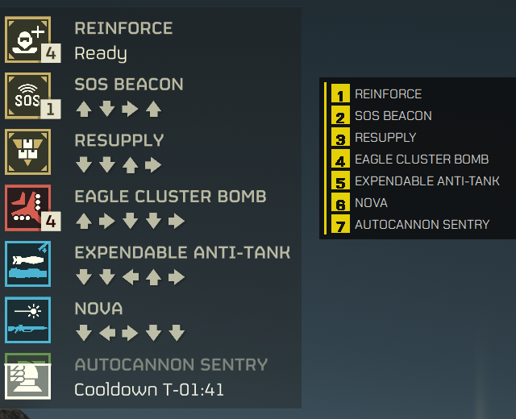

For Helldivers 2 · Windows 10 & 11 · Free
One press.
Freedom delivered.
Stratagem Helper calls in your stratagems with a single key, a mouse button, a foot pedal, or just your voice. No more hammering out arrow codes while a Charger bears down on you.
A single .exe. Nothing to install.

Why I made it
Every stratagem in Helldivers 2 is CTRL plus a string of arrows. Do that a few dozen times a match, under pressure, for a few hundred hours, and your wrist starts to complain. Mine did, quite a lot.
I didn't want to stop diving, so I wrote something to do the tapping for me. The Orbital 380mm Barrage is CTRL plus seven arrows. With this, it's one key. Or you say "call in orbital barrage" and keep your hands free.
If you live with RSI, carpal tunnel, arthritis, a tremor, chronic pain or limited movement, or you play one-handed, I hope it keeps you in the fight too. That's really the whole point.
How it works
-
Drop in
Run Stratagem Helper and launch the game in borderless or windowed mode. The light at the bottom turns green when it finds Helldivers 2.
-
Scan your loadout
In a mission, hold CTRL until the stratagem menu opens, then press C. It reads your stratagems and their codes off the screen. You'll hear a blip when it's got them.
-
Call it in
Press CTRL + a number, a numpad key on its own, a mouse side button, or say "call in resupply". The stratagem lands in your hand, ready to throw.
- Learns new stratagems by itself. New Warbond out? Scan once and it's in.
- Shows your loadout in the corner of the game so you know which number is which. CTRL + V hides it.
- Voice needs "call in" first, so it won't fire an Eagle every time you mention one to your squad.
- Counts the keypresses it saves you. It's oddly satisfying.
- Accessible itself: full keyboard use, screen reader support, bigger text and High Contrast.
- Keeps itself up to date, but never while you're mid-mission.

Ready to dive?
Grab StratagemHelper.exe from the releases page, put it in a folder of its own (it keeps its settings there) and run it. That's it.
Windows may say it "protected your PC", because the app isn't signed. Click More info, then Run anyway. The source is all on GitHub if you'd like to check it first.